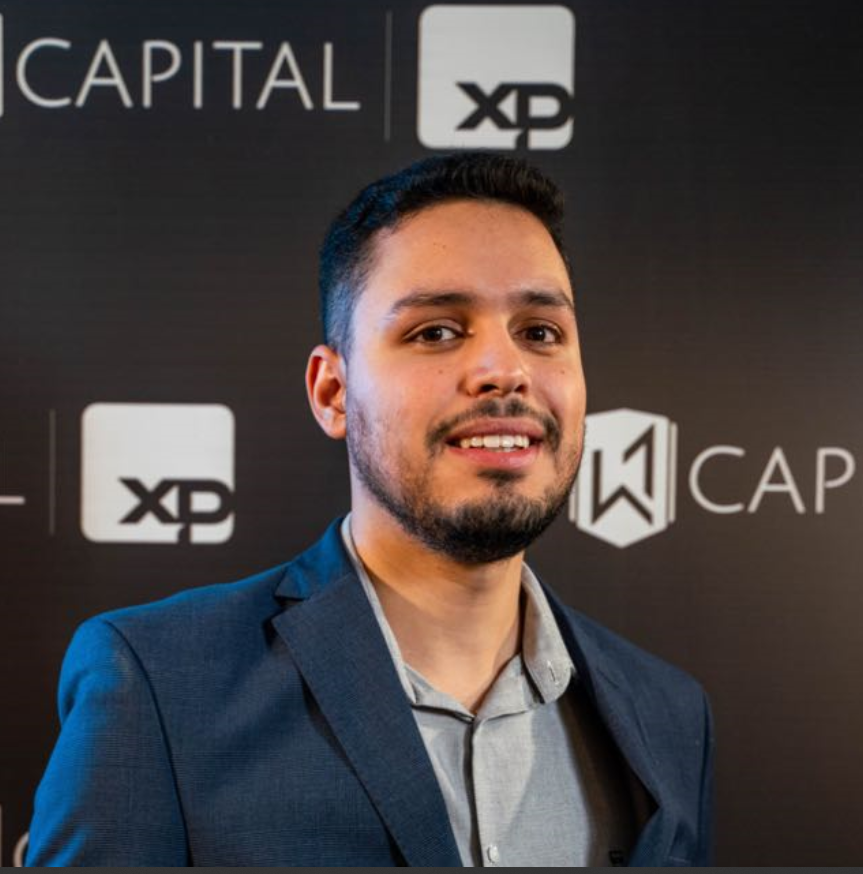
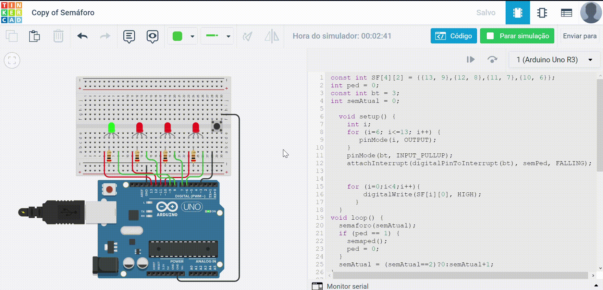
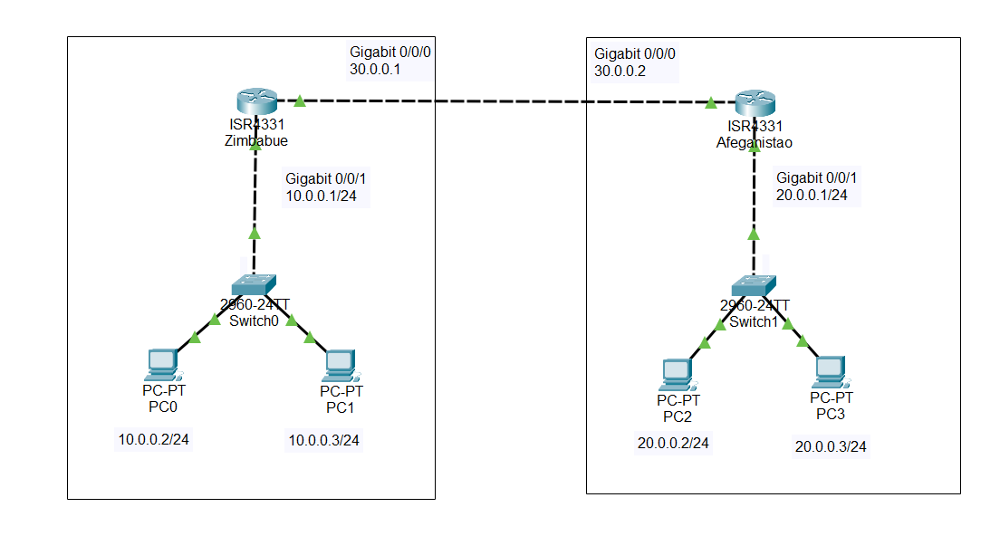
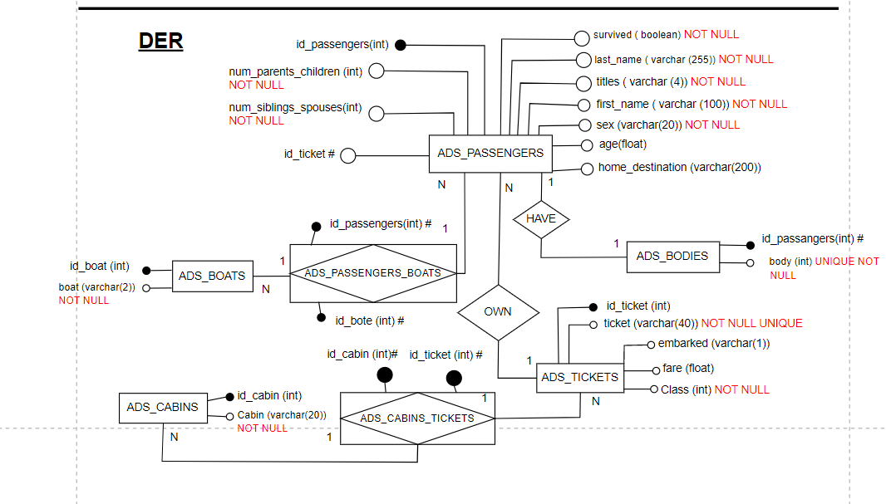

Seja bem-vindo!!
Neste site você poderá ver quais assuntos foram abordados durante o primeiro semestre do curso superior de Análise e Desenvolvimento de Sistemas da escola SENAI Gaspar RIcardo Junior no ano de 2023.
Meu nome é Rafael Henrique de Mattos Ribeiro vou lhe apresentar como foi a minha experiência nesses primeiros 6 meses.
Agora será apresentado os professores que ministraram as matérias do curso durante esse semestre.
Professor André

Professor Gabriel
Professor Cainã
Linguagem de Programação
-
Linguagem de Programação:
- Definição e características.
- Ambientes de programação (IDE).
- Compiladores e interpretadores.
- Sintaxe e semântica.
- Tipos de variáveis e suas aplicações.
- Estruturas de dados.
- Estruturas de controle.
-
HTML e CSS:
- Sintaxe do HTML-5.
- Padrão UTF-8.
- Comandos básicos do HTML: titulação, formulário, botões, links, listas e tabelas.
- Semântica do HTML.
- Estilização com CSS: personalização do documento HTML, animações, posicionamento dos elementos.
-
JavaScript(JS):
- História e evolução do Javascript.
- Programação procedural: algoritmos para cálculos e estruturas de controle.
- Integração do script com o HTML.
- Manipulação do DOM (Document Object Model).
- Captura de eventos e adição de funções.
- Modificação de elementos e animações com DOM.


Automação
-
Controladores Lógicos Programáveis
- O CLP (Controlador Lógico Programável) é um dispositivo eletrônico utilizado na automação industrial.
- Ele consiste em um hardware e um software, que trabalham juntos para controlar e monitorar processos e sistemas.
- Os módulos de entrada recebem sinais dos sensores, enquanto os módulos de saída enviam sinais para atuadores.
- O software do CLP é desenvolvido usando uma linguagem de programação específica para CLPs, como a linguagem ladder.
- O CLP é amplamente utilizado em diversas indústrias, como automobilística, alimentos, farmacêutica e petróleo e gás.
- Ele desempenha um papel importante na automação industrial, permitindo controle preciso e eficiente das operações.
- Uma vantagem do CLP é sua flexibilidade e facilidade de reprogramação, adaptando-se às necessidades específicas de cada processo industrial.
- Em resumo, o CLP é essencial na automação industrial, proporcionando controle eficiente, confiável e flexível nos sistemas industriais.
-
Robótica
- Três Leis de Asimov: Primeira lei: os robôs não podem causar danos às pessoas. Segunda lei: eles devem obedecer às ordens humanas, exceto quando isso entra em conflito com a primeira lei. Terceira lei: os robôs devem proteger sua própria existência.
- História dos robôs industriais: Exemplos de robôs famosos, como o Unimate #001, Unimate 1900, Kawasaki Unimate e KUKA Famulus, que contribuíram para a automação industrial.
- História dos robôs industriais: Exemplos de robôs famosos, como o Unimate #001, Unimate 1900, Kawasaki Unimate e KUKA Famulus, que contribuíram para a automação industrial.
- Tipos de mobilidade: Robôs móveis, como o Opportunity da NASA. Robôs humanoides, como o Asimo da Honda. Robôs fixos, que permanecem estacionários.
- Estrutura cinemática: Robôs com eixos em série ou em paralelo, afetando a sequência e a precisão dos movimentos.
- Tipos de geometrias: Robôs de coordenadas cartesianas, cilíndricas e esféricas, com diferentes trajetórias de movimento.
- Tipos de acionamentos: Acionamentos pneumáticos, mais leves e rápidos. Acionamentos hidráulicos, mais fortes, porém mais lentos.
- Robôs antropomórficos: Robôs com estrutura semelhante à do corpo humano.
- Componentes dos robôs industriais: Base, elo de ligação, juntas e punho, essenciais para a movimentação e manipulação de objetos.
- Parâmetros de movimentação: Trajetória, velocidade, aceleração, acurácia e precisão, que afetam o controle do movimento dos robôs.
-
Embarcados
- Sistemas embarcados são projetados para realizar funções específicas em dispositivos eletrônicos, como controle de temperatura, automação residencial, robótica, entre outros.
- O Arduino é uma plataforma de desenvolvimento de código aberto que utiliza um microcontrolador embarcado para criar projetos interativos e controlar dispositivos físicos. 
- A linguagem C é conhecida por sua eficiência e baixo nível de abstração, permitindo um controle preciso do hardware e uma programação otimizada.
- Através da linguagem C no Arduino, é possível controlar pinos de entrada e saída, ler sensores, acionar atuadores e comunicar-se com outros dispositivos.
- O Arduino e a linguagem C são amplamente utilizados por entusiastas, estudantes e profissionais para prototipagem rápida, automação residencial, Internet das Coisas (IoT) e muito mais.
- Os sistemas embarcados, com destaque para o Arduino e a linguagem C, proporcionam uma maneira acessível e versátil de criar projetos eletrônicos interativos e controlados por software.

Redes de Computadores
- PAN, CAN, LAN e WAN: definições e características de redes locais e amplas.
- Modelos de padronização: modelo OSI e TCP/IP, com suas respectivas camadas e protocolos.
- Topologia física e lógica: diferentes formas de conexão e circulação de dados.
- Endereços MAC (Media Access Control): identificação e envio de pacotes.
- Controle de paridade Frame Checker Sequence (FCS) e CRC (Cyclic Redundancy Check): métodos de verificação de integridade dos dados.
- LLC (Logical Link Control): controle do fluxo de dados.
- PDUs unicast, broadcast e multicast: metodologias de comunicação entre canais.
- Definição de IPs disponíveis em redes e endereços padronizados para rede e broadcast.
- Padrão IEEE: origem, destino, meio de transmissão e regras de comunicação.
- Zona Desmilitarizada (DMZ), VPN (Virtual Private Network), DNS (Domain Name Server), SSH (Secure Shell) e DHCP (Dynamic Host Configuration Protocol): conceitos e funcionalidades.
- Protocolo NAT (Network Address Translation): utilização de endereços IP privados e públicos.
- Controle de fluxo e congestionamento de rede: conceitos e notificações de lentidão de rotas durante a comunicação de dados.
- Apresentações em grupo: temas como História da Internet, Governança e Estrutura, Regulamentação de Redes, RFCs da IETF, Governança IPV4 e IPV6, e TCP, UDP, SCTP e DCTP.
Banco de Dados
- Organização das informações: estruturas lineares e não lineares.
- Árvore binária, SEQL e SQL: conceitos relacionados à estrutura de dados.
- SGBD's (Sistemas de Gerenciamento de Banco de Dados): introdução e importância.
- Modelos de relação e entidades: Modelo Domínio, MER (Modelo Entidade Relacionamento), Mini-mundo, abstração e DER (Diagrama Entidade Relacionamento).
- Comandos DDL (Data Definition Language): CREATE TABLE, tipos de dados, chave primária e chave estrangeira.
- Comandos DML (Data Manipulation Language): INSERT, UPDATE, DELETE e SELECT.
- Implementação de um Banco de Dados Relacional: modelagem e padronização do banco.
- Transações de dados ACID: Atomicidade, Consistência, Isolamento e Durabilidade.
- Formas Normais de uma base de dados: conceitos e aplicação.
- Comandos DQL (Data Query Language): SELECT, ORDER BY, JOIN, GROUP BY, etc.
- Modelagem de dados: conceitos, estrutura dos dados, método ágil, modelo lógico de dados, modelo físico de dados e tipos de armazenamento.
- Projeto 1 - Exercício Dataframe Titanic: análise do dataset dos tripulantes do Titanic com a plataforma Google Colaboratory e bibliotecas como math e Matplotlib.
- Projeto 2 - Exercício Banco de Dados: criação de um MER, DER e implementação de um banco de dados na plataforma PostgreSQL, com diferentes exercícios para cada grupo.
.png)
Ciência de Dados
- Princípios da Estatística: começamos estudando os princípios básicos da estatística, que envolvem a coleta, organização e interpretação de dados. Aprendemos sobre a importância de uma amostra representativa para fazer inferências precisas sobre uma população maior.
- Amostragem: discutimos diferentes métodos de amostragem, como amostragem aleatória simples, estratificada e por conglomerados. Compreendemos como selecionar uma amostra adequada e evitar vieses na coleta de dados.
- Escala de Medição: exploramos as diferentes escalas de medição, como nominal, ordinal, intervalar e de razão. Entendemos como a escala de medição influencia a escolha das técnicas estatísticas apropriadas.
- Tendência Central: estudamos medidas de tendência central, como média, mediana e moda. Aprendemos como essas medidas resumem os dados e fornecem uma indicação do valor típico de uma distribuição.
- Medidas de Dispersão: discutimos medidas de dispersão, como desvio padrão, variância e amplitude. Compreendemos como essas medidas nos ajudam a entender a variabilidade dos dados e a avaliar o quão representativos eles são.
- Teste de Hipóteses: abordamos o conceito de teste de hipóteses e sua aplicação na tomada de decisões estatísticas. Aprendemos como formular hipóteses nulas e alternativas e como realizar testes estatísticos para verificar essas hipóteses.
- Inferência Estatística: discutimos a inferência estatística e como utilizá-la para fazer generalizações sobre uma população com base em uma amostra. Exploramos intervalos de confiança e testes de significância.
- Funções, Limites, Derivadas, Integrais e Raízes Reais: também mergulhamos em conceitos de cálculo, como funções, limites, derivadas, integrais e raízes reais. Esses conceitos nos permitem modelar e analisar fenômenos matemáticos e encontrar soluções para problemas complexos.

Projetos
Agora você poderá acessar o repositório do GitHUB com todos os projetos feitos em sala de aula durante esse semestre!!